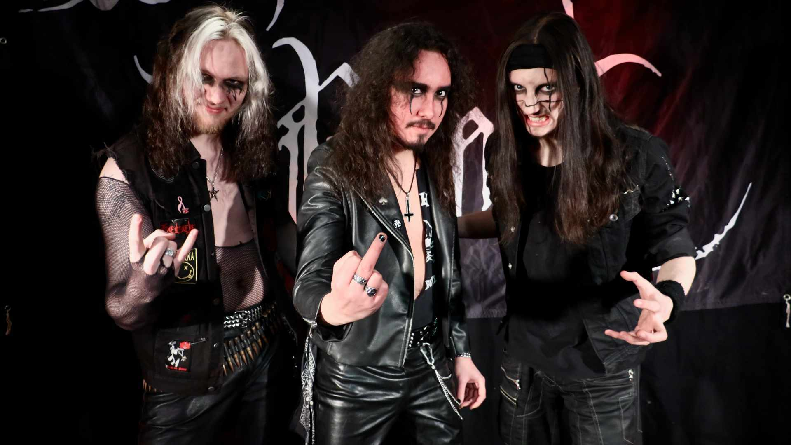

About Tenebris Army
Tenebris Army is a hardrock/heavy metal band from Gjøvik, Norway, formed in 2017. Known for explosive live shows and a sound inspired by 70s and 80s legends like Black Sabbath, Motörhead, Mötley Crüe, Dio, and Judas Priest — but with a modern twist.
The band has toured across Norway multiple times and has earned a high status within the Norwegian underground metal scene over the years. Their debut album "Eyes of the Fallen" was released in 2019, followed by their second album "We Are the Saints" on May 17, 2024.